Felon the Freestylin’ Feline
Supporting files
Additional photos, video recordings, requirements, and project notes. The main case study presents the selected results; these files provide further context and design history.
Each file can be opened or downloaded individually. Expand a category to browse individual files. HEIC images may require downloading to view.
Code (7)
Read text
// Copyright 2015-2016 Espressif Systems (Shanghai) PTE LTD // // Licensed under the Apache License, Version 2.0 (the "License"); // you may not use this file except in compliance with the License. // You may obtain a copy of the License at // // http://www.apache.org/licenses/LICENSE-2.0 // // Unless required by applicable law or agreed to in writing, software // distributed under the License is distributed on an "AS IS" BASIS, // WITHOUT WARRANTIES OR CONDITIONS OF ANY KIND, either express or implied. // See the License for the specific language governing permissions and // limitations under the License. #include "Arduino.h" #include "esp_http_server.h" #include "esp_timer.h" #include "esp_camera.h" #include "img_converters.h" #include "fb_gfx.h" #include "esp32-hal-ledc.h" #include "sdkconfig.h" #include "camera_index.h" #include "board_config.h" #if defined(ARDUINO_ARCH_ESP32) && defined(CONFIG_ARDUHAL_ESP_LOG) #include "esp32-hal-log.h" #endif // LED FLASH setup #if defined(LED_GPIO_NUM) #define CONFIG_LED_MAX_INTENSITY 255 int led_duty = 0; bool isStreaming = false; #endif typedef struct { httpd_req_t *req; size_t len; } jpg_chunking_t; #define PART_BOUNDARY "123456789000000000000987654321" static const char *_STREAM_CONTENT_TYPE = "multipart/x-mixed-replace;boundary=" PART_BOUNDARY; static const char *_STREAM_BOUNDARY = "\r\n--" PART_BOUNDARY "\r\n"; static const char *_STREAM_PART = "Content-Type: image/jpeg\r\nContent-Length: %u\r\nX-Timestamp: %d.%06d\r\n\r\n"; httpd_handle_t stream_httpd = NULL; httpd_handle_t camera_httpd = NULL; typedef struct { size_t size; //number of values used for filtering size_t index; //current value index size_t count; //value count int sum; int *values; //array to be filled with values } ra_filter_t; static ra_filter_t ra_filter; static ra_filter_t *ra_filter_init(ra_filter_t *filter, size_t sample_size) { memset(filter, 0, sizeof(ra_filter_t)); filter->values = (int *)malloc(sample_size * sizeof(int)); if (!filter->values) { return NULL; } memset(filter->values, 0, sample_size * sizeof(int)); filter->size = sample_size; return filter; } #if ARDUHAL_LOG_LEVEL >= ARDUHAL_LOG_LEVEL_INFO static int ra_filter_run(ra_filter_t *filter, int value) { if (!filter->values) { return value; } filter->sum -= filter->values[filter->index]; filter->values[filter->index] = value; filter->sum += filter->values[filter->index]; filter->index++; filter->index = filter->index % filter->size; if (filter->count < filter->size) { filter->count++; } return filter->sum / filter->count; } #endif #if defined(LED_GPIO_NUM) void enable_led(bool en) { // Turn LED On or Off int duty = en ? led_duty : 0; if (en && isStreaming && (led_duty > CONFIG_LED_MAX_INTENSITY)) { duty = CONFIG_LED_MAX_INTENSITY; } ledcWrite(LED_GPIO_NUM, duty); //ledc_set_duty(CONFIG_LED_LEDC_SPEED_MODE, CONFIG_LED_LEDC_CHANNEL, duty); //ledc_update_duty(CONFIG_LED_LEDC_SPEED_MODE, CONFIG_LED_LEDC_CHANNEL); log_i("Set LED intensity to %d", duty); } #endif static esp_err_t bmp_handler(httpd_req_t *req) { camera_fb_t *fb = NULL; esp_err_t res = ESP_OK; #if ARDUHAL_LOG_LEVEL >= ARDUHAL_LOG_LEVEL_INFO int64_t fr_start = esp_timer_get_time(); #endif fb = esp_camera_fb_get(); if (!fb) { log_e("Camera capture failed"); httpd_resp_send_500(req); return ESP_FAIL; } httpd_resp_set_type(req, "image/x-windows-bmp"); httpd_resp_set_hdr(req, "Content-Disposition", "inline; filename=capture.bmp"); httpd_resp_set_hdr(req, "Access-Control-Allow-Origin", "*"); char ts[32]; // Cast to uint32_t is safe until year 2106. snprintf(ts, 32, "%" PRIu32 ".%06" PRIu32, (uint32_t)fb->timestamp.tv_sec, (uint32_t)fb->timestamp.tv_usec); httpd_resp_set_hdr(req, "X-Timestamp", (const char *)ts); uint8_t *buf = NULL; size_t buf_len = 0; bool converted = frame2bmp(fb, &buf, &buf_len); esp_camera_fb_return(fb); if (!converted) { log_e("BMP Conversion failed"); httpd_resp_send_500(req); return ESP_FAIL; } res = httpd_resp_send(req, (const char *)buf, buf_len); free(buf); #if ARDUHAL_LOG_LEVEL >= ARDUHAL_LOG_LEVEL_INFO int64_t fr_end = esp_timer_get_time(); #endif log_i("BMP: %" PRId32 "ms, %" PRIu32 "B", (int32_t)((fr_end - fr_start) / 1000), (uint32_t)buf_len); return res; } static size_t jpg_encode_stream(void *arg, size_t index, const void *data, size_t len) { jpg_chunking_t *j = (jpg_chunking_t *)arg; if (!index) { j->len = 0; } if (httpd_resp_send_chunk(j->req, (const char *)data, len) != ESP_OK) { return 0; } j->len += len; return len; } static esp_err_t capture_handler(httpd_req_t *req) { camera_fb_t *fb = NULL; esp_err_t res = ESP_OK; #if ARDUHAL_LOG_LEVEL >= ARDUHAL_LOG_LEVEL_INFO int64_t fr_start = esp_timer_get_time(); #endif #if defined(LED_GPIO_NUM) enable_led(true); vTaskDelay(150 / portTICK_PERIOD_MS); // The LED needs to be turned on ~150ms before the call to esp_camera_fb_get() fb = esp_camera_fb_get(); // or it won't be visible in the frame. A better way to do this is needed. enable_led(false); #else fb = esp_camera_fb_get(); #endif if (!fb) { log_e("Camera capture failed"); httpd_resp_send_500(req); return ESP_FAIL; } httpd_resp_set_type(req, "image/jpeg"); httpd_resp_set_hdr(req, "Content-Disposition", "inline; filename=capture.jpg"); httpd_resp_set_hdr(req, "Access-Control-Allow-Origin", "*"); char ts[32]; // Cast to uint32_t is safe until year 2106. snprintf(ts, 32, "%" PRIu32 ".%06" PRIu32, (uint32_t)fb->timestamp.tv_sec, (uint32_t)fb->timestamp.tv_usec); httpd_resp_set_hdr(req, "X-Timestamp", (const char *)ts); #if ARDUHAL_LOG_LEVEL >= ARDUHAL_LOG_LEVEL_INFO size_t fb_len = 0; #endif if (fb->format == PIXFORMAT_JPEG) { #if ARDUHAL_LOG_LEVEL >= ARDUHAL_LOG_LEVEL_INFO fb_len = fb->len; #endif res = httpd_resp_send(req, (const char *)fb->buf, fb->len); } else { jpg_chunking_t jchunk = {req, 0}; res = frame2jpg_cb(fb, 80, jpg_encode_stream, &jchunk) ? ESP_OK : ESP_FAIL; httpd_resp_send_chunk(req, NULL, 0); #if ARDUHAL_LOG_LEVEL >= ARDUHAL_LOG_LEVEL_INFO fb_len = jchunk.len; #endif } esp_camera_fb_return(fb); #if ARDUHAL_LOG_LEVEL >= ARDUHAL_LOG_LEVEL_INFO int64_t fr_end = esp_timer_get_time(); #endif log_i("JPG: %" PRIu32 "B %" PRId32 " ms", (uint32_t)fb_len, (int32_t)((fr_end - fr_start) / 1000)); return res; } static esp_err_t stream_handler(httpd_req_t *req) { camera_fb_t *fb = NULL; struct timeval _timestamp; esp_err_t res = ESP_OK; size_t _jpg_buf_len = 0; uint8_t *_jpg_buf = NULL; char *part_buf[128]; static int64_t last_frame = 0; if (!last_frame) { last_frame = esp_timer_get_time(); } res = httpd_resp_set_type(req, _STREAM_CONTENT_TYPE); if (res != ESP_OK) { return res; } httpd_resp_set_hdr(req, "Access-Control-Allow-Origin", "*"); httpd_resp_set_hdr(req, "X-Framerate", "60"); #if defined(LED_GPIO_NUM) isStreaming = true; enable_led(true); #endif while (true) { fb = esp_camera_fb_get(); if (!fb) { log_e("Camera capture failed"); res = ESP_FAIL; } else { _timestamp.tv_sec = fb->timestamp.tv_sec; _timestamp.tv_usec = fb->timestamp.tv_usec; if (fb->format != PIXFORMAT_JPEG) { bool jpeg_converted = frame2jpg(fb, 80, &_jpg_buf, &_jpg_buf_len); esp_camera_fb_return(fb); fb = NULL; if (!jpeg_converted) { log_e("JPEG compression failed"); res = ESP_FAIL; } } else { _jpg_buf_len = fb->len; _jpg_buf = fb->buf; } } if (res == ESP_OK) { res = httpd_resp_send_chunk(req, _STREAM_BOUNDARY, strlen(_STREAM_BOUNDARY)); } if (res == ESP_OK) { size_t hlen = snprintf((char *)part_buf, 128, _STREAM_PART, _jpg_buf_len, _timestamp.tv_sec, _timestamp.tv_usec); res = httpd_resp_send_chunk(req, (const char *)part_buf, hlen); } if (res == ESP_OK) { res = httpd_resp_send_chunk(req, (const char *)_jpg_buf, _jpg_buf_len); } if (fb) { esp_camera_fb_return(fb); fb = NULL; _jpg_buf = NULL; } else if (_jpg_buf) { free(_jpg_buf); _jpg_buf = NULL; } if (res != ESP_OK) { log_e("Send frame failed"); break; } int64_t fr_end = esp_timer_get_time(); int64_t frame_time = fr_end - last_frame; last_frame = fr_end; frame_time /= 1000; #if ARDUHAL_LOG_LEVEL >= ARDUHAL_LOG_LEVEL_INFO uint32_t avg_frame_time = ra_filter_run(&ra_filter, frame_time); #endif log_i( "MJPG: %" PRIu32 "B %" PRId32 "ms (%.1ffps), AVG: %" PRIu32 "ms (%.1ffps)", (uint32_t)_jpg_buf_len, (int32_t)frame_time, 1000.0 / frame_time, avg_frame_time, 1000.0 / avg_frame_time ); } #if defined(LED_GPIO_NUM) isStreaming = false; enable_led(false); #endif return res; } static esp_err_t parse_get(httpd_req_t *req, char **obuf) { char *buf = NULL; size_t buf_len = 0; buf_len = httpd_req_get_url_query_len(req) + 1; if (buf_len > 1) { buf = (char *)malloc(buf_len); if (!buf) { httpd_resp_send_500(req); return ESP_FAIL; } if (httpd_req_get_url_query_str(req, buf, buf_len) == ESP_OK) { *obuf = buf; return ESP_OK; } free(buf); } httpd_resp_send_404(req); return ESP_FAIL; } static esp_err_t cmd_handler(httpd_req_t *req) { char *buf = NULL; char variable[32]; char value[32]; if (parse_get(req, &buf) != ESP_OK) { return ESP_FAIL; } if (httpd_query_key_value(buf, "var", variable, sizeof(variable)) != ESP_OK || httpd_query_key_value(buf, "val", value, sizeof(value)) != ESP_OK) { free(buf); httpd_resp_send_404(req); return ESP_FAIL; } free(buf); int val = atoi(value); log_i("%s = %d", variable, val); sensor_t *s = esp_camera_sensor_get(); int res = 0; if (!strcmp(variable, "framesize")) { if (s->pixformat == PIXFORMAT_JPEG) { res = s->set_framesize(s, (framesize_t)val); } } else if (!strcmp(variable, "quality")) { res = s->set_quality(s, val); } else if (!strcmp(variable, "contrast")) { res = s->set_contrast(s, val); } else if (!strcmp(variable, "brightness")) { res = s->set_brightness(s, val); } else if (!strcmp(variable, "saturation")) { res = s->set_saturation(s, val); } else if (!strcmp(variable, "gainceiling")) { res = s->set_gainceiling(s, (gainceiling_t)val); } else if (!strcmp(variable, "colorbar")) { res = s->set_colorbar(s, val); } else if (!strcmp(variable, "awb")) { res = s->set_whitebal(s, val); } else if (!strcmp(variable, "agc")) { res = s->set_gain_ctrl(s, val); } else if (!strcmp(variable, "aec")) { res = s->set_exposure_ctrl(s, val); } else if (!strcmp(variable, "hmirror")) { res = s->set_hmirror(s, val); } else if (!strcmp(variable, "vflip")) { res = s->set_vflip(s, val); } else if (!strcmp(variable, "awb_gain")) { res = s->set_awb_gain(s, val); } else if (!strcmp(variable, "agc_gain")) { res = s->set_agc_gain(s, val); } else if (!strcmp(variable, "aec_value")) { res = s->set_aec_value(s, val); } else if (!strcmp(variable, "aec2")) { res = s->set_aec2(s, val); } else if (!strcmp(variable, "dcw")) { res = s->set_dcw(s, val); } else if (!strcmp(variable, "bpc")) { res = s->set_bpc(s, val); } else if (!strcmp(variable, "wpc")) { res = s->set_wpc(s, val); } else if (!strcmp(variable, "raw_gma")) { res = s->set_raw_gma(s, val); } else if (!strcmp(variable, "lenc")) { res = s->set_lenc(s, val); } else if (!strcmp(variable, "special_effect")) { res = s->set_special_effect(s, val); } else if (!strcmp(variable, "wb_mode")) { res = s->set_wb_mode(s, val); } else if (!strcmp(variable, "ae_level")) { res = s->set_ae_level(s, val); } #if defined(LED_GPIO_NUM) else if (!strcmp(variable, "led_intensity")) { led_duty = val; if (isStreaming) { enable_led(true); } } #endif else { log_i("Unknown command: %s", variable); res = -1; } if (res < 0) { return httpd_resp_send_500(req); } httpd_resp_set_hdr(req, "Access-Control-Allow-Origin", "*"); return httpd_resp_send(req, NULL, 0); } static int print_reg(char *p, char *end, sensor_t *s, uint16_t reg, uint32_t mask) { return snprintf(p, end - p, "\"0x%04x\":%d,", reg, s->get_reg(s, reg, mask)); } static esp_err_t status_handler(httpd_req_t *req) { static char json_response[1024]; sensor_t *s = esp_camera_sensor_get(); char *p = json_response; char *end = json_response + sizeof(json_response); *p++ = '{'; if (s->id.PID == OV5640_PID || s->id.PID == OV3660_PID) { for (int reg = 0x3400; reg < 0x3406; reg += 2) { p += print_reg(p, end, s, reg, 0xFFF); //12 bit } p += print_reg(p, end, s, 0x3406, 0xFF); p += print_reg(p, end, s, 0x3500, 0xFFFF0); //16 bit p += print_reg(p, end, s, 0x3503, 0xFF); p += print_reg(p, end, s, 0x350a, 0x3FF); //10 bit p += print_reg(p, end, s, 0x350c, 0xFFFF); //16 bit for (int reg = 0x5480; reg <= 0x5490; reg++) { p += print_reg(p, end, s, reg, 0xFF); } for (int reg = 0x5380; reg <= 0x538b; reg++) { p += print_reg(p, end, s, reg, 0xFF); } for (int reg = 0x5580; reg < 0x558a; reg++) { p += print_reg(p, end, s, reg, 0xFF); } p += print_reg(p, end, s, 0x558a, 0x1FF); //9 bit } else if (s->id.PID == OV2640_PID) { p += print_reg(p, end, s, 0xd3, 0xFF); p += print_reg(p, end, s, 0x111, 0xFF); p += print_reg(p, end, s, 0x132, 0xFF); } p += snprintf(p, end - p, "\"xclk\":%u,", s->xclk_freq_hz / 1000000); p += snprintf(p, end - p, "\"pixformat\":%u,", s->pixformat); p += snprintf(p, end - p, "\"framesize\":%u,", s->status.framesize); p += snprintf(p, end - p, "\"quality\":%u,", s->status.quality); p += snprintf(p, end - p, "\"brightness\":%d,", s->status.brightness); p += snprintf(p, end - p, "\"contrast\":%d,", s->status.contrast); p += snprintf(p, end - p, "\"saturation\":%d,", s->status.saturation); p += snprintf(p, end - p, "\"sharpness\":%d,", s->status.sharpness); p += snprintf(p, end - p, "\"special_effect\":%u,", s->status.special_effect); p += snprintf(p, end - p, "\"wb_mode\":%u,", s->status.wb_mode); p += snprintf(p, end - p, "\"awb\":%u,", s->status.awb); p += snprintf(p, end - p, "\"awb_gain\":%u,", s->status.awb_gain); p += snprintf(p, end - p, "\"aec\":%u,", s->status.aec); p += snprintf(p, end - p, "\"aec2\":%u,", s->status.aec2); p += snprintf(p, end - p, "\"ae_level\":%d,", s->status.ae_level); p += snprintf(p, end - p, "\"aec_value\":%u,", s->status.aec_value); p += snprintf(p, end - p, "\"agc\":%u,", s->status.agc); p += snprintf(p, end - p, "\"agc_gain\":%u,", s->status.agc_gain); p += snprintf(p, end - p, "\"gainceiling\":%u,", s->status.gainceiling); p += snprintf(p, end - p, "\"bpc\":%u,", s->status.bpc); p += snprintf(p, end - p, "\"wpc\":%u,", s->status.wpc); p += snprintf(p, end - p, "\"raw_gma\":%u,", s->status.raw_gma); p += snprintf(p, end - p, "\"lenc\":%u,", s->status.lenc); p += snprintf(p, end - p, "\"hmirror\":%u,", s->status.hmirror); p += snprintf(p, end - p, "\"vflip\":%u,", s->status.vflip); p += snprintf(p, end - p, "\"dcw\":%u,", s->status.dcw); p += snprintf(p, end - p, "\"colorbar\":%u", s->status.colorbar); #if defined(LED_GPIO_NUM) p += snprintf(p, end - p, ",\"led_intensity\":%u", led_duty); #else p += snprintf(p, end - p, ",\"led_intensity\":%d", -1); #endif *p++ = '}'; *p++ = 0; httpd_resp_set_type(req, "application/json"); httpd_resp_set_hdr(req, "Access-Control-Allow-Origin", "*"); return httpd_resp_send(req, json_response, strlen(json_response)); } static esp_err_t xclk_handler(httpd_req_t *req) { char *buf = NULL; char _xclk[32]; if (parse_get(req, &buf) != ESP_OK) { return ESP_FAIL; } if (httpd_query_key_value(buf, "xclk", _xclk, sizeof(_xclk)) != ESP_OK) { free(buf); httpd_resp_send_404(req); return ESP_FAIL; } free(buf); int xclk = atoi(_xclk); log_i("Set XCLK: %d MHz", xclk); sensor_t *s = esp_camera_sensor_get(); int res = s->set_xclk(s, LEDC_TIMER_0, xclk); if (res) { return httpd_resp_send_500(req); } httpd_resp_set_hdr(req, "Access-Control-Allow-Origin", "*"); return httpd_resp_send(req, NULL, 0); } static esp_err_t reg_handler(httpd_req_t *req) { char *buf = NULL; char _reg[32]; char _mask[32]; char _val[32]; if (parse_get(req, &buf) != ESP_OK) { return ESP_FAIL; } if (httpd_query_key_value(buf, "reg", _reg, sizeof(_reg)) != ESP_OK || httpd_query_key_value(buf, "mask", _mask, sizeof(_mask)) != ESP_OK || httpd_query_key_value(buf, "val", _val, sizeof(_val)) != ESP_OK) { free(buf); httpd_resp_send_404(req); return ESP_FAIL; } free(buf); int reg = atoi(_reg); int mask = atoi(_mask); int val = atoi(_val); log_i("Set Register: reg: 0x%02x, mask: 0x%02x, value: 0x%02x", reg, mask, val); sensor_t *s = esp_camera_sensor_get(); int res = s->set_reg(s, reg, mask, val); if (res) { return httpd_resp_send_500(req); } httpd_resp_set_hdr(req, "Access-Control-Allow-Origin", "*"); return httpd_resp_send(req, NULL, 0); } static esp_err_t greg_handler(httpd_req_t *req) { char *buf = NULL; char _reg[32]; char _mask[32]; if (parse_get(req, &buf) != ESP_OK) { return ESP_FAIL; } if (httpd_query_key_value(buf, "reg", _reg, sizeof(_reg)) != ESP_OK || httpd_query_key_value(buf, "mask", _mask, sizeof(_mask)) != ESP_OK) { free(buf); httpd_resp_send_404(req); return ESP_FAIL; } free(buf); int reg = atoi(_reg); int mask = atoi(_mask); sensor_t *s = esp_camera_sensor_get(); int res = s->get_reg(s, reg, mask); if (res < 0) { return httpd_resp_send_500(req); } log_i("Get Register: reg: 0x%02x, mask: 0x%02x, value: 0x%02x", reg, mask, res); char buffer[20]; const char *val = itoa(res, buffer, 10); httpd_resp_set_hdr(req, "Access-Control-Allow-Origin", "*"); return httpd_resp_send(req, val, strlen(val)); } static int parse_get_var(char *buf, const char *key, int def) { char _int[16]; if (httpd_query_key_value(buf, key, _int, sizeof(_int)) != ESP_OK) { return def; } return atoi(_int); } static esp_err_t pll_handler(httpd_req_t *req) { char *buf = NULL; if (parse_get(req, &buf) != ESP_OK) { return ESP_FAIL; } int bypass = parse_get_var(buf, "bypass", 0); int mul = parse_get_var(buf, "mul", 0); int sys = parse_get_var(buf, "sys", 0); int root = parse_get_var(buf, "root", 0); int pre = parse_get_var(buf, "pre", 0); int seld5 = parse_get_var(buf, "seld5", 0); int pclken = parse_get_var(buf, "pclken", 0); int pclk = parse_get_var(buf, "pclk", 0); free(buf); log_i("Set Pll: bypass: %d, mul: %d, sys: %d, root: %d, pre: %d, seld5: %d, pclken: %d, pclk: %d", bypass, mul, sys, root, pre, seld5, pclken, pclk); sensor_t *s = esp_camera_sensor_get(); int res = s->set_pll(s, bypass, mul, sys, root, pre, seld5, pclken, pclk); if (res) { return httpd_resp_send_500(req); } httpd_resp_set_hdr(req, "Access-Control-Allow-Origin", "*"); return httpd_resp_send(req, NULL, 0); } static esp_err_t win_handler(httpd_req_t *req) { char *buf = NULL; if (parse_get(req, &buf) != ESP_OK) { return ESP_FAIL; } int startX = parse_get_var(buf, "sx", 0); int startY = parse_get_var(buf, "sy", 0); int endX = parse_get_var(buf, "ex", 0); int endY = parse_get_var(buf, "ey", 0); int offsetX = parse_get_var(buf, "offx", 0); int offsetY = parse_get_var(buf, "offy", 0); int totalX = parse_get_var(buf, "tx", 0); int totalY = parse_get_var(buf, "ty", 0); // codespell:ignore totaly int outputX = parse_get_var(buf, "ox", 0); int outputY = parse_get_var(buf, "oy", 0); bool scale = parse_get_var(buf, "scale", 0) == 1; bool binning = parse_get_var(buf, "binning", 0) == 1; free(buf); log_i( "Set Window: Start: %d %d, End: %d %d, Offset: %d %d, Total: %d %d, Output: %d %d, Scale: %u, Binning: %u", startX, startY, endX, endY, offsetX, offsetY, totalX, totalY, outputX, outputY, scale, binning // codespell:ignore totaly ); sensor_t *s = esp_camera_sensor_get(); int res = s->set_res_raw(s, startX, startY, endX, endY, offsetX, offsetY, totalX, totalY, outputX, outputY, scale, binning); // codespell:ignore totaly if (res) { return httpd_resp_send_500(req); } httpd_resp_set_hdr(req, "Access-Control-Allow-Origin", "*"); return httpd_resp_send(req, NULL, 0); } static esp_err_t index_handler(httpd_req_t *req) { httpd_resp_set_type(req, "text/html"); httpd_resp_set_hdr(req, "Content-Encoding", "gzip"); sensor_t *s = esp_camera_sensor_get(); if (s != NULL) { if (s->id.PID == OV3660_PID) { return httpd_resp_send(req, (const char *)index_ov3660_html_gz, index_ov3660_html_gz_len); } else if (s->id.PID == OV5640_PID) { return httpd_resp_send(req, (const char *)index_ov5640_html_gz, index_ov5640_html_gz_len); } else { return httpd_resp_send(req, (const char *)index_ov2640_html_gz, index_ov2640_html_gz_len); } } else { log_e("Camera sensor not found"); return httpd_resp_send_500(req); } } void startCameraServer() { httpd_config_t config = HTTPD_DEFAULT_CONFIG(); config.max_uri_handlers = 16; httpd_uri_t index_uri = { .uri = "/", .method = HTTP_GET, .handler = index_handler, .user_ctx = NULL #ifdef CONFIG_HTTPD_WS_SUPPORT , .is_websocket = true, .handle_ws_control_frames = false, .supported_subprotocol = NULL #endif }; httpd_uri_t status_uri = { .uri = "/status", .method = HTTP_GET, .handler = status_handler, .user_ctx = NULL #ifdef CONFIG_HTTPD_WS_SUPPORT , .is_websocket = true, .handle_ws_control_frames = false, .supported_subprotocol = NULL #endif }; httpd_uri_t cmd_uri = { .uri = "/control", .method = HTTP_GET, .handler = cmd_handler, .user_ctx = NULL #ifdef CONFIG_HTTPD_WS_SUPPORT , .is_websocket = true, .handle_ws_control_frames = false, .supported_subprotocol = NULL #endif }; httpd_uri_t capture_uri = { .uri = "/capture", .method = HTTP_GET, .handler = capture_handler, .user_ctx = NULL #ifdef CONFIG_HTTPD_WS_SUPPORT , .is_websocket = true, .handle_ws_control_frames = false, .supported_subprotocol = NULL #endif }; httpd_uri_t stream_uri = { .uri = "/stream", .method = HTTP_GET, .handler = stream_handler, .user_ctx = NULL #ifdef CONFIG_HTTPD_WS_SUPPORT , .is_websocket = true, .handle_ws_control_frames = false, .supported_subprotocol = NULL #endif }; httpd_uri_t bmp_uri = { .uri = "/bmp", .method = HTTP_GET, .handler = bmp_handler, .user_ctx = NULL #ifdef CONFIG_HTTPD_WS_SUPPORT , .is_websocket = true, .handle_ws_control_frames = false, .supported_subprotocol = NULL #endif }; httpd_uri_t xclk_uri = { .uri = "/xclk", .method = HTTP_GET, .handler = xclk_handler, .user_ctx = NULL #ifdef CONFIG_HTTPD_WS_SUPPORT , .is_websocket = true, .handle_ws_control_frames = false, .supported_subprotocol = NULL #endif }; httpd_uri_t reg_uri = { .uri = "/reg", .method = HTTP_GET, .handler = reg_handler, .user_ctx = NULL #ifdef CONFIG_HTTPD_WS_SUPPORT , .is_websocket = true, .handle_ws_control_frames = false, .supported_subprotocol = NULL #endif }; httpd_uri_t greg_uri = { .uri = "/greg", .method = HTTP_GET, .handler = greg_handler, .user_ctx = NULL #ifdef CONFIG_HTTPD_WS_SUPPORT , .is_websocket = true, .handle_ws_control_frames = false, .supported_subprotocol = NULL #endif }; httpd_uri_t pll_uri = { .uri = "/pll", .method = HTTP_GET, .handler = pll_handler, .user_ctx = NULL #ifdef CONFIG_HTTPD_WS_SUPPORT , .is_websocket = true, .handle_ws_control_frames = false, .supported_subprotocol = NULL #endif }; httpd_uri_t win_uri = { .uri = "/resolution", .method = HTTP_GET, .handler = win_handler, .user_ctx = NULL #ifdef CONFIG_HTTPD_WS_SUPPORT , .is_websocket = true, .handle_ws_control_frames = false, .supported_subprotocol = NULL #endif }; ra_filter_init(&ra_filter, 20); log_i("Starting web server on port: '%u'", config.server_port); if (httpd_start(&camera_httpd, &config) == ESP_OK) { httpd_register_uri_handler(camera_httpd, &index_uri); httpd_register_uri_handler(camera_httpd, &cmd_uri); httpd_register_uri_handler(camera_httpd, &status_uri); httpd_register_uri_handler(camera_httpd, &capture_uri); httpd_register_uri_handler(camera_httpd, &bmp_uri); httpd_register_uri_handler(camera_httpd, &xclk_uri); httpd_register_uri_handler(camera_httpd, ®_uri); httpd_register_uri_handler(camera_httpd, &greg_uri); httpd_register_uri_handler(camera_httpd, &pll_uri); httpd_register_uri_handler(camera_httpd, &win_uri); } config.server_port += 1; config.ctrl_port += 1; log_i("Starting stream server on port: '%u'", config.server_port); if (httpd_start(&stream_httpd, &config) == ESP_OK) { httpd_register_uri_handler(stream_httpd, &stream_uri); } } void setupLedFlash() { #if defined(LED_GPIO_NUM) ledcAttach(LED_GPIO_NUM, 5000, 8); #else log_i("LED flash is disabled -> LED_GPIO_NUM undefined"); #endif }code/vision/app_httpd.cpp · 0.02 MB · Download
Read text
#ifndef BOARD_CONFIG_H #define BOARD_CONFIG_H // // WARNING!!! PSRAM IC required for UXGA resolution and high JPEG quality // Ensure ESP32 Wrover Module or other board with PSRAM is selected // Partial images will be transmitted if image exceeds buffer size // // You must select partition scheme from the board menu that has at least 3MB APP space. // =================== // Select camera model // =================== //#define CAMERA_MODEL_WROVER_KIT // Has PSRAM //#define CAMERA_MODEL_ESP_EYE // Has PSRAM //#define CAMERA_MODEL_ESP32S3_EYE // Has PSRAM //#define CAMERA_MODEL_M5STACK_PSRAM // Has PSRAM //#define CAMERA_MODEL_M5STACK_V2_PSRAM // M5Camera version B Has PSRAM //#define CAMERA_MODEL_M5STACK_WIDE // Has PSRAM //#define CAMERA_MODEL_M5STACK_ESP32CAM // No PSRAM //#define CAMERA_MODEL_M5STACK_UNITCAM // No PSRAM //#define CAMERA_MODEL_M5STACK_CAMS3_UNIT // Has PSRAM #define CAMERA_MODEL_AI_THINKER // Has PSRAM //#define CAMERA_MODEL_TTGO_T_JOURNAL // No PSRAM //#define CAMERA_MODEL_XIAO_ESP32S3 // Has PSRAM // ** Espressif Internal Boards ** //#define CAMERA_MODEL_ESP32_CAM_BOARD //#define CAMERA_MODEL_ESP32S2_CAM_BOARD //#define CAMERA_MODEL_ESP32S3_CAM_LCD //#define CAMERA_MODEL_DFRobot_FireBeetle2_ESP32S3 // Has PSRAM //#define CAMERA_MODEL_DFRobot_Romeo_ESP32S3 // Has PSRAM #include "camera_pins.h" #endif // BOARD_CONFIG_H
code/vision/board_config.h · 0.00 MB · Download
code/vision/camera_index.h · 0.14 MB · Download
Read text
#if defined(CAMERA_MODEL_WROVER_KIT) #define PWDN_GPIO_NUM -1 #define RESET_GPIO_NUM -1 #define XCLK_GPIO_NUM 21 #define SIOD_GPIO_NUM 26 #define SIOC_GPIO_NUM 27 #define Y9_GPIO_NUM 35 #define Y8_GPIO_NUM 34 #define Y7_GPIO_NUM 39 #define Y6_GPIO_NUM 36 #define Y5_GPIO_NUM 19 #define Y4_GPIO_NUM 18 #define Y3_GPIO_NUM 5 #define Y2_GPIO_NUM 4 #define VSYNC_GPIO_NUM 25 #define HREF_GPIO_NUM 23 #define PCLK_GPIO_NUM 22 #elif defined(CAMERA_MODEL_ESP_EYE) #define PWDN_GPIO_NUM -1 #define RESET_GPIO_NUM -1 #define XCLK_GPIO_NUM 4 #define SIOD_GPIO_NUM 18 #define SIOC_GPIO_NUM 23 #define Y9_GPIO_NUM 36 #define Y8_GPIO_NUM 37 #define Y7_GPIO_NUM 38 #define Y6_GPIO_NUM 39 #define Y5_GPIO_NUM 35 #define Y4_GPIO_NUM 14 #define Y3_GPIO_NUM 13 #define Y2_GPIO_NUM 34 #define VSYNC_GPIO_NUM 5 #define HREF_GPIO_NUM 27 #define PCLK_GPIO_NUM 25 #define LED_GPIO_NUM 22 #elif defined(CAMERA_MODEL_M5STACK_PSRAM) #define PWDN_GPIO_NUM -1 #define RESET_GPIO_NUM 15 #define XCLK_GPIO_NUM 27 #define SIOD_GPIO_NUM 25 #define SIOC_GPIO_NUM 23 #define Y9_GPIO_NUM 19 #define Y8_GPIO_NUM 36 #define Y7_GPIO_NUM 18 #define Y6_GPIO_NUM 39 #define Y5_GPIO_NUM 5 #define Y4_GPIO_NUM 34 #define Y3_GPIO_NUM 35 #define Y2_GPIO_NUM 32 #define VSYNC_GPIO_NUM 22 #define HREF_GPIO_NUM 26 #define PCLK_GPIO_NUM 21 #elif defined(CAMERA_MODEL_M5STACK_V2_PSRAM) #define PWDN_GPIO_NUM -1 #define RESET_GPIO_NUM 15 #define XCLK_GPIO_NUM 27 #define SIOD_GPIO_NUM 22 #define SIOC_GPIO_NUM 23 #define Y9_GPIO_NUM 19 #define Y8_GPIO_NUM 36 #define Y7_GPIO_NUM 18 #define Y6_GPIO_NUM 39 #define Y5_GPIO_NUM 5 #define Y4_GPIO_NUM 34 #define Y3_GPIO_NUM 35 #define Y2_GPIO_NUM 32 #define VSYNC_GPIO_NUM 25 #define HREF_GPIO_NUM 26 #define PCLK_GPIO_NUM 21 #elif defined(CAMERA_MODEL_M5STACK_WIDE) #define PWDN_GPIO_NUM -1 #define RESET_GPIO_NUM 15 #define XCLK_GPIO_NUM 27 #define SIOD_GPIO_NUM 22 #define SIOC_GPIO_NUM 23 #define Y9_GPIO_NUM 19 #define Y8_GPIO_NUM 36 #define Y7_GPIO_NUM 18 #define Y6_GPIO_NUM 39 #define Y5_GPIO_NUM 5 #define Y4_GPIO_NUM 34 #define Y3_GPIO_NUM 35 #define Y2_GPIO_NUM 32 #define VSYNC_GPIO_NUM 25 #define HREF_GPIO_NUM 26 #define PCLK_GPIO_NUM 21 #define LED_GPIO_NUM 2 #elif defined(CAMERA_MODEL_M5STACK_ESP32CAM) #define PWDN_GPIO_NUM -1 #define RESET_GPIO_NUM 15 #define XCLK_GPIO_NUM 27 #define SIOD_GPIO_NUM 25 #define SIOC_GPIO_NUM 23 #define Y9_GPIO_NUM 19 #define Y8_GPIO_NUM 36 #define Y7_GPIO_NUM 18 #define Y6_GPIO_NUM 39 #define Y5_GPIO_NUM 5 #define Y4_GPIO_NUM 34 #define Y3_GPIO_NUM 35 #define Y2_GPIO_NUM 17 #define VSYNC_GPIO_NUM 22 #define HREF_GPIO_NUM 26 #define PCLK_GPIO_NUM 21 #elif defined(CAMERA_MODEL_M5STACK_UNITCAM) #define PWDN_GPIO_NUM -1 #define RESET_GPIO_NUM 15 #define XCLK_GPIO_NUM 27 #define SIOD_GPIO_NUM 25 #define SIOC_GPIO_NUM 23 #define Y9_GPIO_NUM 19 #define Y8_GPIO_NUM 36 #define Y7_GPIO_NUM 18 #define Y6_GPIO_NUM 39 #define Y5_GPIO_NUM 5 #define Y4_GPIO_NUM 34 #define Y3_GPIO_NUM 35 #define Y2_GPIO_NUM 32 #define VSYNC_GPIO_NUM 22 #define HREF_GPIO_NUM 26 #define PCLK_GPIO_NUM 21 #elif defined(CAMERA_MODEL_M5STACK_CAMS3_UNIT) #define PWDN_GPIO_NUM -1 #define RESET_GPIO_NUM 21 #define XCLK_GPIO_NUM 11 #define SIOD_GPIO_NUM 17 #define SIOC_GPIO_NUM 41 #define Y9_GPIO_NUM 13 #define Y8_GPIO_NUM 4 #define Y7_GPIO_NUM 10 #define Y6_GPIO_NUM 5 #define Y5_GPIO_NUM 7 #define Y4_GPIO_NUM 16 #define Y3_GPIO_NUM 15 #define Y2_GPIO_NUM 6 #define VSYNC_GPIO_NUM 42 #define HREF_GPIO_NUM 18 #define PCLK_GPIO_NUM 12 #define LED_GPIO_NUM 14 #elif defined(CAMERA_MODEL_AI_THINKER) #define PWDN_GPIO_NUM 32 #define RESET_GPIO_NUM -1 #define XCLK_GPIO_NUM 0 #define SIOD_GPIO_NUM 26 #define SIOC_GPIO_NUM 27 #define Y9_GPIO_NUM 35 #define Y8_GPIO_NUM 34 #define Y7_GPIO_NUM 39 #define Y6_GPIO_NUM 36 #define Y5_GPIO_NUM 21 #define Y4_GPIO_NUM 19 #define Y3_GPIO_NUM 18 #define Y2_GPIO_NUM 5 #define VSYNC_GPIO_NUM 25 #define HREF_GPIO_NUM 23 #define PCLK_GPIO_NUM 22 // 4 for flash led or 33 for normal led #define LED_GPIO_NUM 4 #elif defined(CAMERA_MODEL_TTGO_T_JOURNAL) #define PWDN_GPIO_NUM 0 #define RESET_GPIO_NUM 15 #define XCLK_GPIO_NUM 27 #define SIOD_GPIO_NUM 25 #define SIOC_GPIO_NUM 23 #define Y9_GPIO_NUM 19 #define Y8_GPIO_NUM 36 #define Y7_GPIO_NUM 18 #define Y6_GPIO_NUM 39 #define Y5_GPIO_NUM 5 #define Y4_GPIO_NUM 34 #define Y3_GPIO_NUM 35 #define Y2_GPIO_NUM 17 #define VSYNC_GPIO_NUM 22 #define HREF_GPIO_NUM 26 #define PCLK_GPIO_NUM 21 #elif defined(CAMERA_MODEL_XIAO_ESP32S3) #define PWDN_GPIO_NUM -1 #define RESET_GPIO_NUM -1 #define XCLK_GPIO_NUM 10 #define SIOD_GPIO_NUM 40 #define SIOC_GPIO_NUM 39 #define Y9_GPIO_NUM 48 #define Y8_GPIO_NUM 11 #define Y7_GPIO_NUM 12 #define Y6_GPIO_NUM 14 #define Y5_GPIO_NUM 16 #define Y4_GPIO_NUM 18 #define Y3_GPIO_NUM 17 #define Y2_GPIO_NUM 15 #define VSYNC_GPIO_NUM 38 #define HREF_GPIO_NUM 47 #define PCLK_GPIO_NUM 13 #elif defined(CAMERA_MODEL_ESP32_CAM_BOARD) // The 18 pin header on the board has Y5 and Y3 swapped #define USE_BOARD_HEADER 0 #define PWDN_GPIO_NUM 32 #define RESET_GPIO_NUM 33 #define XCLK_GPIO_NUM 4 #define SIOD_GPIO_NUM 18 #define SIOC_GPIO_NUM 23 #define Y9_GPIO_NUM 36 #define Y8_GPIO_NUM 19 #define Y7_GPIO_NUM 21 #define Y6_GPIO_NUM 39 #if USE_BOARD_HEADER #define Y5_GPIO_NUM 13 #else #define Y5_GPIO_NUM 35 #endif #define Y4_GPIO_NUM 14 #if USE_BOARD_HEADER #define Y3_GPIO_NUM 35 #else #define Y3_GPIO_NUM 13 #endif #define Y2_GPIO_NUM 34 #define VSYNC_GPIO_NUM 5 #define HREF_GPIO_NUM 27 #define PCLK_GPIO_NUM 25 #elif defined(CAMERA_MODEL_ESP32S3_CAM_LCD) #define PWDN_GPIO_NUM -1 #define RESET_GPIO_NUM -1 #define XCLK_GPIO_NUM 40 #define SIOD_GPIO_NUM 17 #define SIOC_GPIO_NUM 18 #define Y9_GPIO_NUM 39 #define Y8_GPIO_NUM 41 #define Y7_GPIO_NUM 42 #define Y6_GPIO_NUM 12 #define Y5_GPIO_NUM 3 #define Y4_GPIO_NUM 14 #define Y3_GPIO_NUM 47 #define Y2_GPIO_NUM 13 #define VSYNC_GPIO_NUM 21 #define HREF_GPIO_NUM 38 #define PCLK_GPIO_NUM 11 #elif defined(CAMERA_MODEL_ESP32S2_CAM_BOARD) // The 18 pin header on the board has Y5 and Y3 swapped #define USE_BOARD_HEADER 0 #define PWDN_GPIO_NUM 1 #define RESET_GPIO_NUM 2 #define XCLK_GPIO_NUM 42 #define SIOD_GPIO_NUM 41 #define SIOC_GPIO_NUM 18 #define Y9_GPIO_NUM 16 #define Y8_GPIO_NUM 39 #define Y7_GPIO_NUM 40 #define Y6_GPIO_NUM 15 #if USE_BOARD_HEADER #define Y5_GPIO_NUM 12 #else #define Y5_GPIO_NUM 13 #endif #define Y4_GPIO_NUM 5 #if USE_BOARD_HEADER #define Y3_GPIO_NUM 13 #else #define Y3_GPIO_NUM 12 #endif #define Y2_GPIO_NUM 14 #define VSYNC_GPIO_NUM 38 #define HREF_GPIO_NUM 4 #define PCLK_GPIO_NUM 3 #elif defined(CAMERA_MODEL_ESP32S3_EYE) #define PWDN_GPIO_NUM -1 #define RESET_GPIO_NUM -1 #define XCLK_GPIO_NUM 15 #define SIOD_GPIO_NUM 4 #define SIOC_GPIO_NUM 5 #define Y2_GPIO_NUM 11 #define Y3_GPIO_NUM 9 #define Y4_GPIO_NUM 8 #define Y5_GPIO_NUM 10 #define Y6_GPIO_NUM 12 #define Y7_GPIO_NUM 18 #define Y8_GPIO_NUM 17 #define Y9_GPIO_NUM 16 #define VSYNC_GPIO_NUM 6 #define HREF_GPIO_NUM 7 #define PCLK_GPIO_NUM 13 #elif defined(CAMERA_MODEL_DFRobot_FireBeetle2_ESP32S3) || defined(CAMERA_MODEL_DFRobot_Romeo_ESP32S3) #define PWDN_GPIO_NUM -1 #define RESET_GPIO_NUM -1 #define XCLK_GPIO_NUM 45 #define SIOD_GPIO_NUM 1 #define SIOC_GPIO_NUM 2 #define Y9_GPIO_NUM 48 #define Y8_GPIO_NUM 46 #define Y7_GPIO_NUM 8 #define Y6_GPIO_NUM 7 #define Y5_GPIO_NUM 4 #define Y4_GPIO_NUM 41 #define Y3_GPIO_NUM 40 #define Y2_GPIO_NUM 39 #define VSYNC_GPIO_NUM 6 #define HREF_GPIO_NUM 42 #define PCLK_GPIO_NUM 5 #else #error "Camera model not selected" #endif
code/vision/camera_pins.h · 0.01 MB · Download
code/vision/ci.yml · 0.00 MB · Download
Read text
# Name, Type, SubType, Offset, Size, Flags nvs, data, nvs, 0x9000, 0x5000, otadata, data, ota, 0xe000, 0x2000, app0, app, ota_0, 0x10000, 0x3c0000, fr, data, , 0x3d0000, 0x20000, coredump, data, coredump,0x3f0000, 0x10000,
code/vision/partitions.csv · 0.00 MB · Download
Read text
#include "esp_camera.h" #include <WiFi.h> #include <WebServer.h> const char* ssid = "REPLACE_WITH_YOUR_VALUE"; const char* password = "REPLACE_WITH_YOUR_VALUE"; const int BRIGHTNESS_THRESHOLD = 240; const framesize_t FRAME_SIZE = FRAMESIZE_QQVGA; #define PWDN_GPIO_NUM 32 #define RESET_GPIO_NUM -1 #define XCLK_GPIO_NUM 0 #define SIOD_GPIO_NUM 26 #define SIOC_GPIO_NUM 27 #define Y9_GPIO_NUM 35 #define Y8_GPIO_NUM 34 #define Y7_GPIO_NUM 39 #define Y6_GPIO_NUM 36 #define Y5_GPIO_NUM 21 #define Y4_GPIO_NUM 19 #define Y3_GPIO_NUM 18 #define Y2_GPIO_NUM 5 #define VSYNC_GPIO_NUM 25 #define HREF_GPIO_NUM 23 #define PCLK_GPIO_NUM 22 WebServer server(80); struct DetectionResult { int brightest; int x; int y; bool aboveThreshold; unsigned long lastUpdateMs; }; DetectionResult lastResult = {0, -1, -1, false, 0}; DetectionResult detectBrightest(camera_fb_t* fb) { DetectionResult result; result.brightest = 0; result.x = -1; result.y = -1; result.aboveThreshold = false; result.lastUpdateMs = millis(); if (!fb || fb->format != PIXFORMAT_GRAYSCALE) { return result; } int width = fb->width; int height = fb->height; uint8_t* pixels = fb->buf; for (int y = 0; y < height; y++) { int row = y * width; for (int x = 0; x < width; x++) { uint8_t b = pixels[row + x]; if (b > result.brightest) { result.brightest = b; result.x = x; result.y = y; } } } result.aboveThreshold = (result.brightest >= BRIGHTNESS_THRESHOLD); return result; } void handleRoot() { String html = R"rawliteral( <!DOCTYPE html> <html> <head> <meta charset="utf-8"> <title>ESP32-CAM Laser Tracker</title> <style> body { font-family: Arial, sans-serif; margin: 24px; background: #111; color: #eee; } .box { margin-top: 15px; padding: 14px; background: #1d1d1d; border-radius: 8px; max-width: 420px; } .hit { color: #00ff88; font-weight: bold; } .miss { color: #ff6666; font-weight: bold; } .mono { font-family: Consolas, monospace; } </style> </head> <body> <h2>Laser Tracker</h2> <div class="box"> <div>Brightest value: <span id="val" class="mono">-</span></div> <div>X: <span id="x" class="mono">-</span></div> <div>Y: <span id="y" class="mono">-</span></div> <div>Status: <span id="status">-</span></div> <div>Age (ms): <span id="age" class="mono">-</span></div> </div> <script> const val = document.getElementById('val'); const xOut = document.getElementById('x'); const yOut = document.getElementById('y'); const status = document.getElementById('status'); const age = document.getElementById('age'); async function refreshData() { try { const r = await fetch('/brightest?ts=' + Date.now(), { cache: 'no-store' }); const j = await r.json(); val.textContent = j.brightest; xOut.textContent = j.x; yOut.textContent = j.y; age.textContent = j.ageMs; if (j.aboveThreshold) { status.textContent = 'BRIGHT SPOT DETECTED'; status.className = 'hit'; } else { status.textContent = 'below threshold'; status.className = 'miss'; } } catch (e) { status.textContent = 'read error'; status.className = 'miss'; } } setInterval(refreshData, 100); refreshData(); </script> </body> </html> )rawliteral"; server.sendHeader("Cache-Control", "no-cache, no-store, must-revalidate"); server.sendHeader("Pragma", "no-cache"); server.sendHeader("Expires", "0"); server.send(200, "text/html", html); } void handleBrightest() { unsigned long ageMs = millis() - lastResult.lastUpdateMs; String json = "{"; json += "\"brightest\":" + String(lastResult.brightest) + ","; json += "\"x\":" + String(lastResult.x) + ","; json += "\"y\":" + String(lastResult.y) + ","; json += "\"aboveThreshold\":" + String(lastResult.aboveThreshold ? "true" : "false") + ","; json += "\"ageMs\":" + String(ageMs); json += "}"; server.sendHeader("Cache-Control", "no-cache, no-store, must-revalidate"); server.sendHeader("Pragma", "no-cache"); server.sendHeader("Expires", "0"); server.send(200, "application/json", json); } bool initCamera() { camera_config_t config; config.ledc_channel = LEDC_CHANNEL_0; config.ledc_timer = LEDC_TIMER_0; config.pin_d0 = Y2_GPIO_NUM; config.pin_d1 = Y3_GPIO_NUM; config.pin_d2 = Y4_GPIO_NUM; config.pin_d3 = Y5_GPIO_NUM; config.pin_d4 = Y6_GPIO_NUM; config.pin_d5 = Y7_GPIO_NUM; config.pin_d6 = Y8_GPIO_NUM; config.pin_d7 = Y9_GPIO_NUM; config.pin_xclk = XCLK_GPIO_NUM; config.pin_pclk = PCLK_GPIO_NUM; config.pin_vsync = VSYNC_GPIO_NUM; config.pin_href = HREF_GPIO_NUM; config.pin_sccb_sda = SIOD_GPIO_NUM; config.pin_sccb_scl = SIOC_GPIO_NUM; config.pin_pwdn = PWDN_GPIO_NUM; config.pin_reset = RESET_GPIO_NUM; config.xclk_freq_hz = 10000000; config.pixel_format = PIXFORMAT_GRAYSCALE; config.frame_size = FRAME_SIZE; config.jpeg_quality = 12; config.fb_count = 1; config.grab_mode = CAMERA_GRAB_LATEST; config.fb_location = CAMERA_FB_IN_PSRAM; esp_err_t err = esp_camera_init(&config); if (err != ESP_OK) { Serial.printf("Camera init failed with error 0x%x\n", err); return false; } sensor_t* s = esp_camera_sensor_get(); if (s) { s->set_framesize(s, FRAME_SIZE); s->set_brightness(s, 0); s->set_contrast(s, 2); s->set_saturation(s, -2); s->set_special_effect(s, 2); s->set_whitebal(s, 0); s->set_awb_gain(s, 0); s->set_exposure_ctrl(s, 0); s->set_aec2(s, 0); s->set_ae_level(s, -1); s->set_gain_ctrl(s, 0); s->set_agc_gain(s, 0); s->set_hmirror(s, 0); s->set_vflip(s, 0); } return true; } void setup() { Serial.begin(115200); Serial.setDebugOutput(false); Serial.println(); Serial.println("Booting..."); if (!initCamera()) { Serial.println("Camera init failed"); while (true) { delay(1000); } } WiFi.begin(ssid, password); Serial.print("Connecting to WiFi"); while (WiFi.status() != WL_CONNECTED) { delay(300); Serial.print("."); } Serial.println(); Serial.print("Open this in your browser: http://"); Serial.println(WiFi.localIP()); server.on("/", HTTP_GET, handleRoot); server.on("/brightest", HTTP_GET, handleBrightest); server.begin(); lastResult.lastUpdateMs = millis(); } void loop() { camera_fb_t* fb = esp_camera_fb_get(); if (fb) { lastResult = detectBrightest(fb); esp_camera_fb_return(fb); } server.handleClient(); }code/vision/vision.ino · 0.01 MB · Download
Documents (1)
documents/MG996R Servo Motor.pdf · 0.09 MB · Download
Media/Images (12)
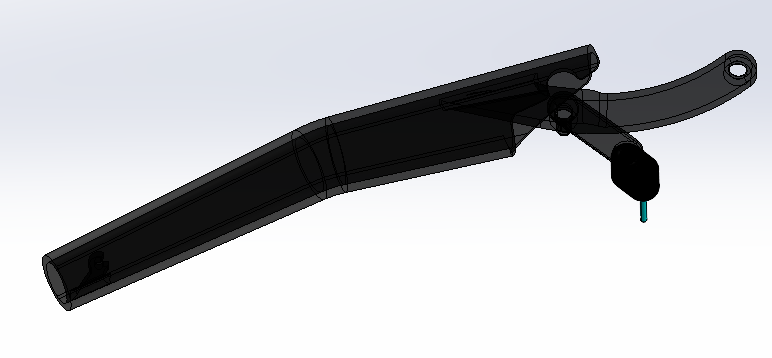
media/images/armswingassy.png · 0.03 MB · Download
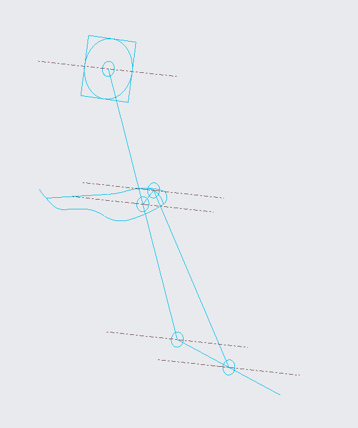
media/images/bruhSkel.png · 0.01 MB · Download
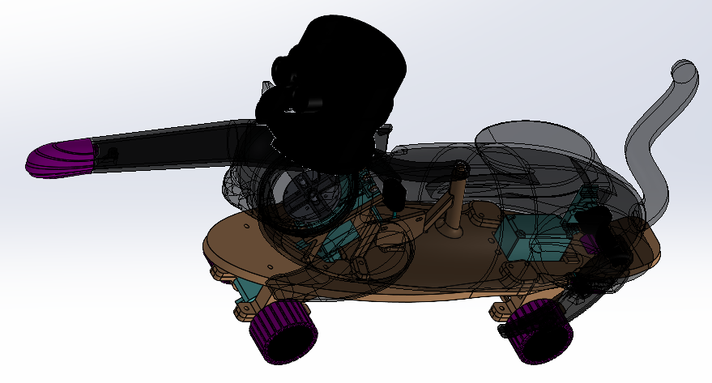
media/images/catfullassy.png · 0.14 MB · Download
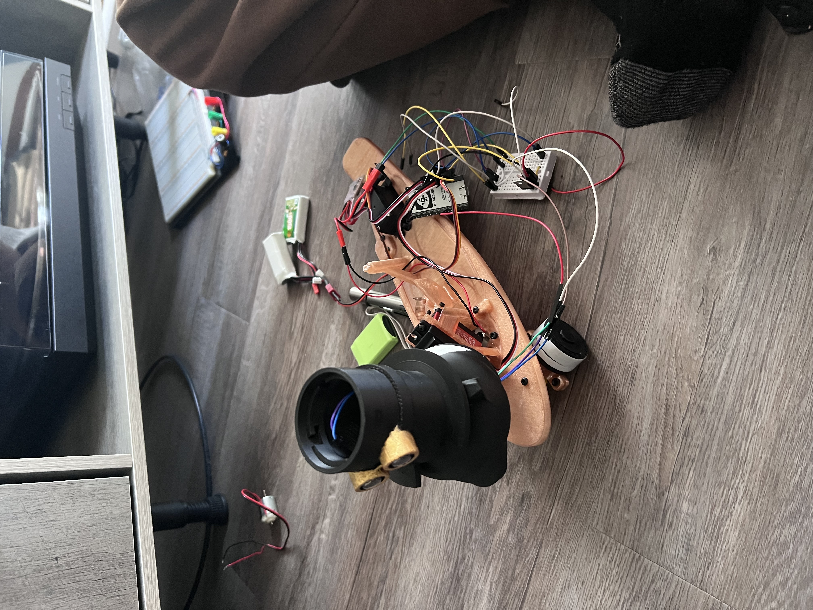
media/images/chassiswithhead.jpeg · 2.94 MB · Download
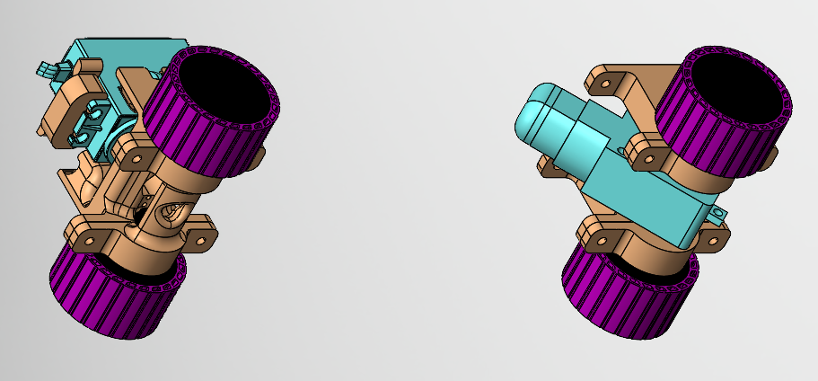
media/images/drivesystemassy.png · 0.20 MB · Download
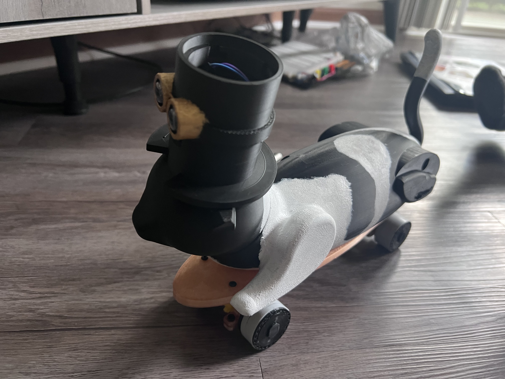
media/images/finalassyiso.jpeg · 2.83 MB · Download
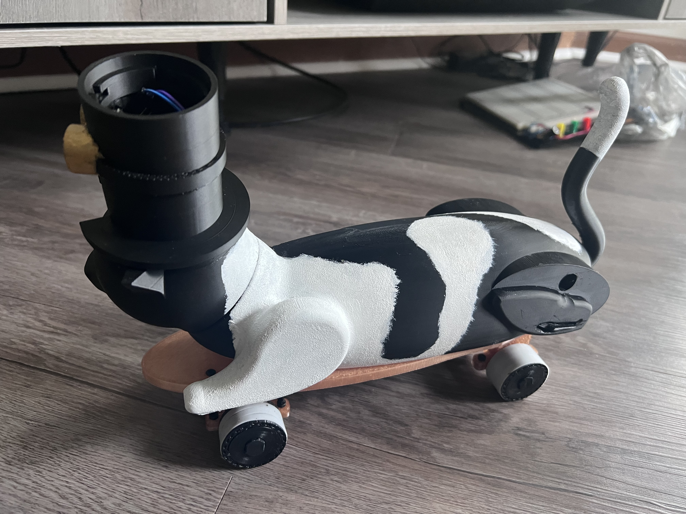
media/images/finalassyside.jpeg · 3.17 MB · Download
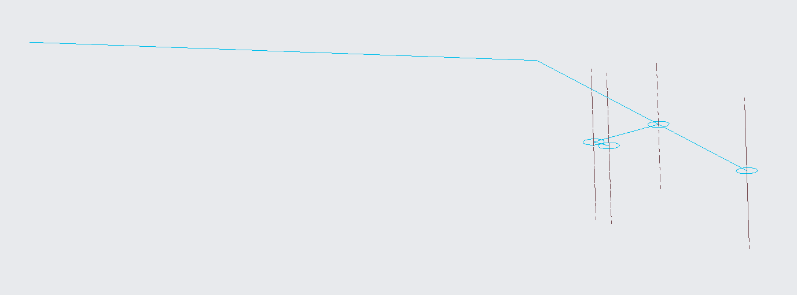
media/images/harminnarminSkel.png · 0.01 MB · Download
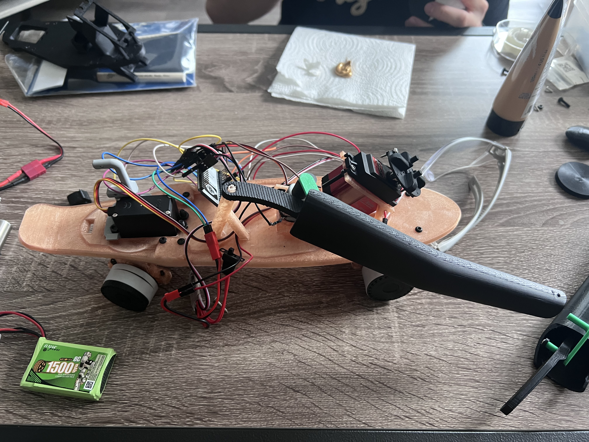
media/images/headlesschassis.jpeg · 3.43 MB · Download
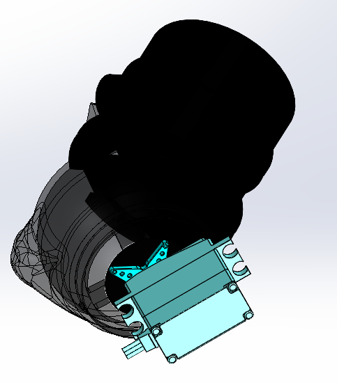
media/images/headturnassy.png · 0.06 MB · Download
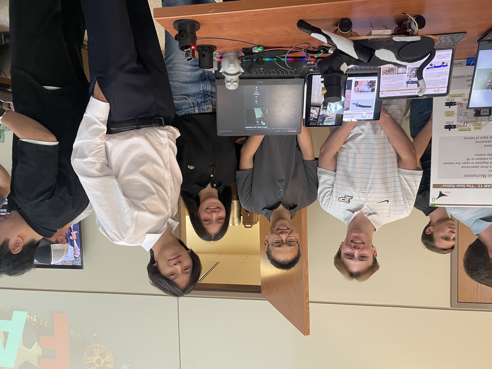
media/images/presentation-booth.jpg · 3.82 MB · Download
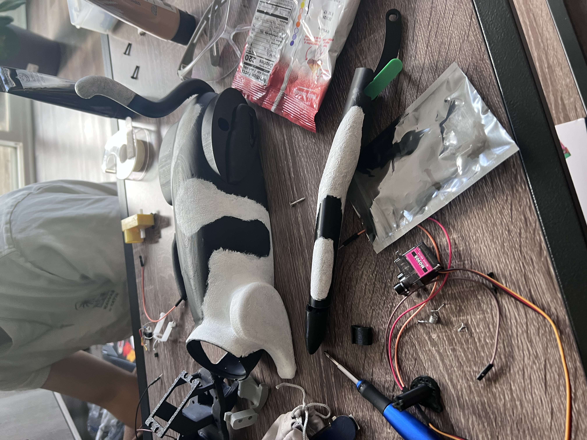
media/images/shell.jpeg · 2.90 MB · Download


Media/Videos (4)
media/videos/armswiping.mp4 · 1.50 MB · Download
media/videos/fullchase.mp4 · 4.14 MB · Download
media/videos/headturnlasertracking.mp4 · 1.72 MB · Download
media/videos/legswing.mp4 · 2.39 MB · Download
Notes (1)
Read text
# Felon the Freestylin’ Feline ## Purpose Create an interactive skateboard cat with at least two nontrivial electromechanical systems. ## Requirements and constraints - Fit within a 10 × 10 × 10 inch envelope. - Work within a $70 budget. - Integrate electromechanical systems while supporting fast revision and assembly. ## Engineering contribution I contributed heavily to the interactive skateboard cat, including developing a split chassis that separates aesthetic pieces from functional components. This supported easier 3D printing, revision, and assembly. ## Outcome and limits The team demonstrated laser-responsive driving, steering, and arm motion and earned an Honorable Mention. Head retention and arm-motor attachment remained unreliable during the toy fair; the rear-leg swinging mechanism was not completed. ## From separate mechanisms to an integrated toy Before: Prototype parts had interference and difficult interfaces during assembly. After: Rapid printed revisions and oversized fastening holes made assembly and disassembly easier. The final design combined front drive, rear steering, a swiping arm, and head rotation. Head retention and arm-motor attachment still needed another revision.
project-notes.md · 0.00 MB · Download